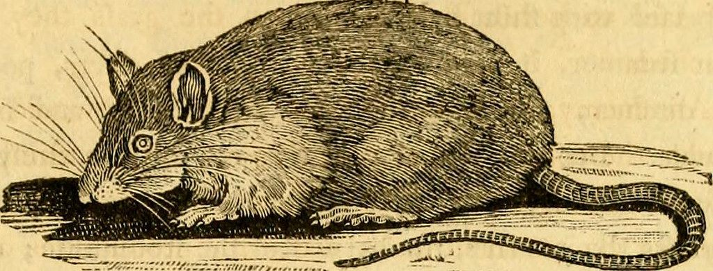

In 1902, the colonial authorities in Hanoi attempted to exterminate rats to control the plague. This created an unintended economy of rat tails, as citizens were paid for every rat tail they turned in!
This led to one of the most bizarre historical events, where instead of reducing the rat population, it led to breeding more rats to collect more tails. Now, you can own a piece of history from this strange event.
